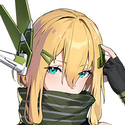
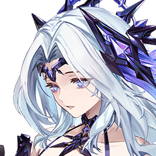
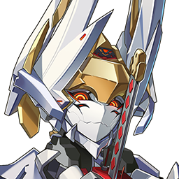
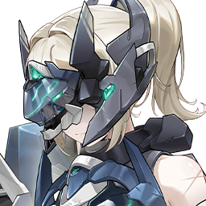
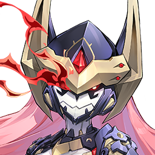
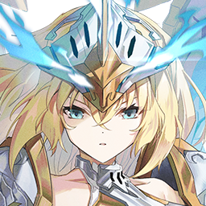
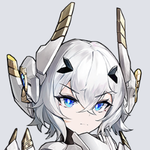
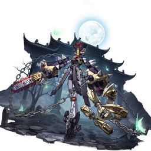
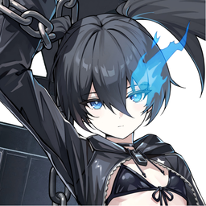
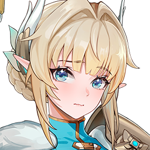

Character Reference
キャラ別 武装・凸効果参照
検索、コスト別の開閉、キャラ個別ページをまとめたデータベースです。キャラ名・コスト・個別ページURLは 星の翼(Starward) 日本語wiki のキャラクター一覧を基準にしています。
Roster
キャラ一覧
コスト3.0 19キャラ
3.0
グリフィン
射撃8件 / 格闘26件 / 覚醒2件。要点から詳細表まで確認できます。
3.0
ヒカリ
射撃20件 / 格闘0件 / 覚醒0件。要点から詳細表まで確認できます。

3.0
エルフィン
射撃15件 / 格闘0件 / 覚醒0件。要点から詳細表まで確認できます。
3.0
ケルビム
射撃9件 / 格闘11件 / 覚醒2件。要点から詳細表まで確認できます。
3.0
シュウウ
射撃30件 / 格闘0件 / 覚醒0件。要点から詳細表まで確認できます。
3.0
スズラン
射撃28件 / 格闘0件 / 覚醒0件。要点から詳細表まで確認できます。
3.0
キャヴァリー
射撃13件 / 格闘6件 / 覚醒0件。要点から詳細表まで確認できます。
3.0
ラジエル
射撃7件 / 格闘28件 / 覚醒3件。要点から詳細表まで確認できます。
3.0
影
射撃7件 / 格闘23件 / 覚醒0件。要点から詳細表まで確認できます。
3.0
ライン
射撃12件 / 格闘2件 / 覚醒5件。要点から詳細表まで確認できます。
3.0
ロタ
射撃6件 / 格闘18件 / 覚醒2件。要点から詳細表まで確認できます。
3.0
イーザー
射撃7件 / 格闘13件 / 覚醒2件。要点から詳細表まで確認できます。
3.0
秋雲
射撃6件 / 格闘25件 / 覚醒0件。要点から詳細表まで確認できます。
3.0
ベータ-ロンギヌス
射撃10件 / 格闘10件 / 覚醒0件。要点から詳細表まで確認できます。
3.0
キャミィ
射撃8件 / 格闘15件 / 覚醒0件。要点から詳細表まで確認できます。

3.0
セイレン
射撃14件 / 格闘22件 / 覚醒0件。要点から詳細表まで確認できます。

3.0
無銘
射撃11件 / 格闘15件 / 覚醒0件。要点から詳細表まで確認できます。
3.0
アカツキ
射撃7件 / 格闘27件 / 覚醒0件。要点から詳細表まで確認できます。

3.0 / 期間限定
ヴォイドセーバー
射撃9件 / 格闘33件 / 覚醒0件。要点から詳細表まで確認できます。
コスト2.5 24キャラ
2.5
フリード
射撃12件 / 格闘11件 / 覚醒0件。要点から詳細表まで確認できます。
2.5
カゼ
射撃6件 / 格闘7件 / 覚醒0件。要点から詳細表まで確認できます。
2.5
シャオリン
射撃4件 / 格闘22件 / 覚醒0件。要点から詳細表まで確認できます。
2.5
シャープ
射撃13件 / 格闘0件 / 覚醒0件。要点から詳細表まで確認できます。
2.5
アリス
射撃10件 / 格闘19件 / 覚醒0件。要点から詳細表まで確認できます。
2.5
スカイセーバー
射撃7件 / 格闘22件 / 覚醒0件。要点から詳細表まで確認できます。
2.5
十八号
射撃6件 / 格闘11件 / 覚醒2件。要点から詳細表まで確認できます。
2.5
シグナス
射撃6件 / 格闘16件 / 覚醒0件。要点から詳細表まで確認できます。
2.5
アンジェリス
射撃27件 / 格闘0件 / 覚醒0件。要点から詳細表まで確認できます。

2.5
ヴァルキア
射撃6件 / 格闘13件 / 覚醒2件。要点から詳細表まで確認できます。
2.5
エヴァ
射撃10件 / 格闘8件 / 覚醒0件。要点から詳細表まで確認できます。
2.5 / コラボ
轟雷改
射撃10件 / 格闘8件 / 覚醒0件。要点から詳細表まで確認できます。
2.5
稲
射撃9件 / 格闘7件 / 覚醒3件。要点から詳細表まで確認できます。
2.5 / コラボ
バーゼラルド
射撃15件 / 格闘17件 / 覚醒0件。要点から詳細表まで確認できます。
2.5
ノーラ
射撃4件 / 格闘22件 / 覚醒1件。要点から詳細表まで確認できます。

2.5
ランスロット
射撃9件 / 格闘28件 / 覚醒0件。要点から詳細表まで確認できます。
2.5 / コラボ
サンダーボルト・OTOME
射撃15件 / 格闘22件 / 覚醒0件。要点から詳細表まで確認できます。

2.5 / コラボ
ガラハッド・暁
射撃10件 / 格闘16件 / 覚醒0件。要点から詳細表まで確認できます。

2.5 / コラボ
デッド・アライブ
射撃12件 / 格闘18件 / 覚醒0件。要点から詳細表まで確認できます。
2.5
ハルカ
射撃13件 / 格闘12件 / 覚醒0件。要点から詳細表まで確認できます。
2.5
ドラグナー
射撃13件 / 格闘8件 / 覚醒0件。要点から詳細表まで確認できます。
2.5 / コラボ
レキ
射撃3件 / 格闘29件 / 覚醒0件。要点から詳細表まで確認できます。

2.5 / コラボ
ブラック★ロックシューター
射撃0件 / 格闘46件 / 覚醒2件。要点から詳細表まで確認できます。
2.5 / コラボ
デッドマスター
射撃7件 / 格闘19件 / 覚醒0件。要点から詳細表まで確認できます。
コスト2.0 22キャラ
2.0
ベータ
射撃6件 / 格闘13件 / 覚醒0件。要点から詳細表まで確認できます。
2.0
デュカリオン
射撃4件 / 格闘20件 / 覚醒0件。要点から詳細表まで確認できます。
2.0
セラフィム
射撃7件 / 格闘14件 / 覚醒0件。要点から詳細表まで確認できます。
2.0
アイーダ
射撃4件 / 格闘6件 / 覚醒0件。要点から詳細表まで確認できます。
2.0
パラス
射撃25件 / 格闘0件 / 覚醒0件。要点から詳細表まで確認できます。
2.0
スコーピオン
射撃11件 / 格闘16件 / 覚醒0件。要点から詳細表まで確認できます。
2.0
ヴァーチェ
射撃4件 / 格闘17件 / 覚醒0件。要点から詳細表まで確認できます。
2.0
ザハロワ
射撃5件 / 格闘7件 / 覚醒1件。要点から詳細表まで確認できます。
2.0
咲迦
射撃26件 / 格闘0件 / 覚醒0件。要点から詳細表まで確認できます。
2.0
チンニ
射撃11件 / 格闘9件 / 覚醒2件。要点から詳細表まで確認できます。
2.0
ダークスター
射撃6件 / 格闘5件 / 覚醒0件。要点から詳細表まで確認できます。
2.0
ヒビキ
射撃6件 / 格闘23件 / 覚醒0件。要点から詳細表まで確認できます。
2.0 / コラボ
スティレット
射撃7件 / 格闘8件 / 覚醒3件。要点から詳細表まで確認できます。
2.0 / シーズンパス
ボルゾイ
射撃5件 / 格闘8件 / 覚醒0件。要点から詳細表まで確認できます。
2.0
キャッティ
射撃7件 / 格闘10件 / 覚醒0件。要点から詳細表まで確認できます。
2.0 / シーズンパス
ブリーカー
射撃5件 / 格闘16件 / 覚醒0件。要点から詳細表まで確認できます。
2.0 / コラボ
ガラハッド
射撃5件 / 格闘10件 / 覚醒0件。要点から詳細表まで確認できます。
2.0 / シーズンパス
フランカー
射撃4件 / 格闘14件 / 覚醒0件。要点から詳細表まで確認できます。
2.0 / シーズンパス
アイスリン
射撃6件 / 格闘7件 / 覚醒0件。要点から詳細表まで確認できます。
2.0
クリスタ
射撃6件 / 格闘12件 / 覚醒0件。要点から詳細表まで確認できます。
2.0 / シーズンパス
タチアナ
射撃8件 / 格闘14件 / 覚醒0件。要点から詳細表まで確認できます。
2.0 / 期間限定
フィービー
射撃5件 / 格闘5件 / 覚醒0件。要点から詳細表まで確認できます。
コスト1.5 5キャラ
1.5
オーキッド
射撃4件 / 格闘9件 / 覚醒0件。要点から詳細表まで確認できます。
1.5
スノーウォル
射撃11件 / 格闘0件 / 覚醒2件。要点から詳細表まで確認できます。
1.5
カタリナ
射撃5件 / 格闘13件 / 覚醒2件。要点から詳細表まで確認できます。
1.5
ローランド
射撃5件 / 格闘14件 / 覚醒0件。要点から詳細表まで確認できます。

1.5
ヤミン
射撃4件 / 格闘21件 / 覚醒0件。要点から詳細表まで確認できます。